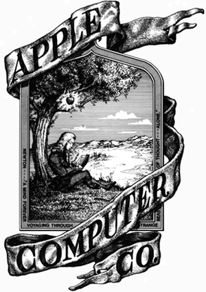

História da Apple: a marca da maçã mais famosa do mundo
Um trio de amigos reunido em uma garagem, mesmo sem saber, estava iniciando algo que revolucionaria a tecnologia.
Steve Jobs Steve Wozniak e Ronald Wayne começaram a produzir computadores em miniatura e assim surgiu a Apple no dia primeiro de abril de 1976, em Cupertino, no Vale do Silício que existia na Califórnia.
O primeiro computador colocado no mercado foi o Apple I, feito por Wozniack. A empresa só decolou na verdade, em 1977, quando o Apple II foi apresentado em uma feira de informática.
Em 1980, quando lançaram o Apple II, a empresa começou a explorar o mercado internacional. Em sequência, nessa mesma década estavam passando por uma grande crise, quando Wozniack sofreu um acidente aéreo e Steve Jobs assumiu como CEO.
Nesse meio tempo, Steve saiu da empresa e voltou somente em 1996 quando a Apple estava à beira da falência. A partir daí começaram a ser lançados produtos e programas que revolucionaram a situação e criaram a oportunidade da marca ser a potência atual.
Ali criaram o iMac que chamou a atenção do público jovem, iPod que proporcionava levar músicas a todo lugar, iPhone um smartphone com super funcionalidades e entretenimento e o iPad com a era dos tablets fáceis de levar para onde quisesse. A empresa também lançou o iTunes, um player que armazenava, organizava e sincronizava músicas a outros aparelhos.
Com o passar do tempo novos produtos foram lançados e cada vez mais as pessoas aderiram a marca. A Apple é mundialmente conhecida e está em todos os cantos, mesmo depois da morte de Steve em 2011.
Logotipo
O primeiro logotipo da Apple mostrava Isaac Newton embaixo de uma macieira. Ele foi desenhado por Ron Wayne, o terceiro fundador da empresa. Porém, foi usado por pouco tempo, pois seria mais complicado reproduzi-lo.

Apple e suas tecnologias
1.iPod
Foi em 2001 que a Apple lançou o que viria a ser um dos seus mais bem-sucedidos produtos no mundo inteiro: o iPod. O aparelho é um player de mídia que revolucionou a forma como nós ouvíamos música no começo do Século XXI. Com o iPod, tínhamos uma biblioteca enorme de canções no nosso bolso, para ouvir como e onde quiséssemos. Com o passar do tempo, o iPod evoluiu e passou a trabalhar com vários tipos de mídias, como jogos por exemplo. Hoje em dia, o iPod Touch (linha mais recente do aparelho) funciona de forma muito parecida com o iPhone, permitindo acesso à Internet e todos os aplicativos, só não fazendo ligações telefônicas. O iPod se tornou um grande sucesso de vendas e marcou história na indústria da tecnologia por integrar um sistema de compras de músicas (falaremos sobre isso a seguir), tocador de mídias e computadores
2.iTunes
Outro famoso produto da Apple, que ajudou a revolucionar nossos hábitos no Século XXI, foi o iTunes. O software reprodutor de mídia que vinha acoplado com o iPod cresceu e se tornou um produto independente e ainda maior. Um dos seus atrativos sempre foi a iTunes Store, onde é possível comprar canções de artistas e colocar em seu iPod para ouvir onde e quando quiser. Mas hoje, porém, o iTunes já faz mais coisas. Uma indústria inteira de conteúdos, os podcasts, nasceu e se hospedou no iTunes, divulgando novos capítulos dos seus programas todos os dias. Além deles, filmes, séries de TV e outros programas também são vendidos pelo iTunes, que cresceu e deixou as barreiras do iPod, sendo acessado por qualquer pessoa hoje em dia, mesmo quem não tem um dispositivo Apple.
3.iPhone
Poucas empresas podem se orgulhar de ter criado uma indústria sozinhas. A Apple pode. Foi em 2007 que a empresa laçou o iPhone, o primeiro smartphone no padrão que conhecemos hoje. Claro que o termo já existia anteriormente e era usado para aparelhos que podem ser descritos como “avôs” dos celulares atuais, mas foi com o iPhone que esse conceito se popularizou e dominou completamente o mercado. De lá para cá, toneladas de vendas. Estima-se que a Apple já tenha vendido mais de um bilhão de iPhones no mundo inteiro de 2007 até 2017. O aparelho é tão importante para a empresa que é um dos responsáveis pela marca incrível de 1 trilhão de dólares em valor de mercado atingido pela Apple em 2018. O que será que o futuro guarda para o iPhone e o mercado de smartphones?